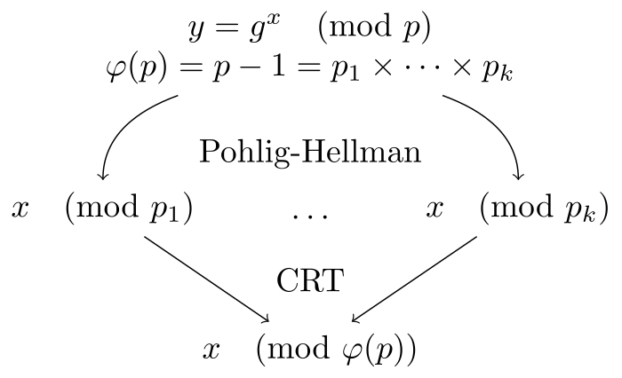

Field trip
I recently went on a field trip and all I brought home was a bunch of numbers.Attachment:
#!/bin/python3
from hashlib import sha256
from Crypto.Util import number
from Crypto.Cipher import AES
BITS = 224
f = 26959946667150639794667015087019630673637144422540572481103610249993
g = 7
def reduce(a):
while (l := a.bit_length()) > 224:
a ^= f << (l - 225)
return a
def mul(a,b):
res = 0
for i in range(b.bit_length()):
if b & 1:
res ^= a << i
b >>= 1
return reduce(res)
def pow(a,n):
res = 1
exp = a
while n > 0:
if n & 1:
res = mul(res, exp)
exp = mul(exp,exp)
n >>= 1
return res
if __name__ == '__main__':
a = number.getRandomNBitInteger(BITS)
A = pow(g,a)
print(A)
b = number.getRandomNBitInteger(BITS)
B = pow(g,b)
print(B)
K = pow(A,b)
assert K == pow(A,b)
key = sha256(K.to_bytes(28)).digest()
flag = open('../meta/flag.txt','r').read().encode()
print(AES.new(key, AES.MODE_ECB).encrypt(flag + b'\x00' * (16 - len(flag) % 16)).hex())Output:
22740222493854193828995311834548386053886320984395671900304436279839
13537441615011702013355237281886711701217244531581593794890884829133
9946ca81ffb1a741cff186a38ecbb4ddcf0e912764413642641fab7db83278a31268b5dc13e66cd86990ab1b65b73465So we are solving the following discrete logarithm problem:
- The field is
GF(2^224), where f corresponds tox^224 + x^9 + x^8 + x^3 + 1 - Given
g=7, computeA=pow(g, a),B=pow(g, b)whereaandbare random unknown numbers - We need to compute
pow(A, b)to decrypt the flag
It looks like the Diffie-Hellman method, but a GF(2^224) field is used. we need to compute a or b to compute pow(A, b) or pow(B, a).
I asked DeepSeek to solve this challenge, here is the prompt:
Solve CTF Challenge:
#!/bin/python3
from hashlib import sha256
from Crypto.Util import number
from Crypto.Cipher import AES
BITS = 224
f = 26959946667150639794667015087019630673637144422540572481103610249993
g = 7
def reduce(a):
while (l := a.bit_length()) > 224:
a ^= f << (l - 225)
return a
def mul(a,b):
res = 0
for i in range(b.bit_length()):
if b & 1:
res ^= a << i
b >>= 1
return reduce(res)
def pow(a,n):
res = 1
exp = a
while n > 0:
if n & 1:
res = mul(res, exp)
exp = mul(exp,exp)
n >>= 1
return res
if __name__ == '__main__':
a = number.getRandomNBitInteger(BITS)
A = pow(g,a)
print(A)
b = number.getRandomNBitInteger(BITS)
B = pow(g,b)
print(B)
K = pow(A,b)
assert K == pow(A,b)
key = sha256(K.to_bytes(28)).digest()
flag = open('../meta/flag.txt','r').read().encode()
print(AES.new(key, AES.MODE_ECB).encrypt(flag + b'\x00' * (16 - len(flag) % 16)).hex())It gives us a solver:
#!/bin/python3
from hashlib import sha256
from Crypto.Cipher import AES
import sympy
from sympy.ntheory.modular import crt
BITS = 224
f = 26959946667150639794667015087019630673637144422540572481103610249993
g = 7
def reduce(a):
while (l := a.bit_length()) > BITS:
a ^= f << (l - (BITS+1))
return a
def mul(a, b):
res = 0
for i in range(b.bit_length()):
if b & 1:
res ^= a << i
b >>= 1
return reduce(res)
def pow(a, n):
res = 1
exp = a
while n > 0:
if n & 1:
res = mul(res, exp)
exp = mul(exp, exp)
n >>= 1
return res
def inv(a):
n_order = 2**BITS - 1
return pow(a, n_order - 1)
def bsgs(base, target, order):
m = int(sympy.sqrt(order)) + 1
baby = {}
current = 1
for j in range(m):
baby[current] = j
current = mul(current, base)
base_m = pow(base, m)
giant = inv(base_m)
current = target
for i in range(m):
if current in baby:
return i * m + baby[current]
current = mul(current, giant)
return None
def main():
import sys
if len(sys.argv) < 2:
print("Usage: python solve.py output.txt")
return
with open(sys.argv[1], 'r') as fin:
A = int(fin.readline().strip())
B = int(fin.readline().strip())
ciphertext_hex = fin.readline().strip()
ciphertext = bytes.fromhex(ciphertext_hex)
n_order = 2**BITS - 1
factors = sympy.factorint(n_order)
moduli = []
residues = []
for p, e in factors.items():
m = p**e
gamma = pow(g, n_order // m)
Abar = pow(A, n_order // m)
x = bsgs(gamma, Abar, m)
if x is None:
print(f"Discrete log not found for factor {p}")
return
residues.append(x)
moduli.append(m)
a = crt(moduli, residues)[0]
K = pow(B, a)
key = sha256(K.to_bytes(28)).digest()
cipher = AES.new(key, AES.MODE_ECB)
flag = cipher.decrypt(ciphertext)
print(flag.decode())
if __name__ == '__main__':
main()It takes several minutes to produce the answer: ENO{1t_i5_no1_th3_fi3ld_5iz3_th4t_c0unts}.
It essentially implements the Pohlig–Hellman algorithm: the field GF(2^224) has order 2^224-1, which can be factored to 3 * 5 * 17 * 29 * 43 * 113 * 127 * 257 * 449 * 2689 * 5153 * 65537 * 15790321 * 183076097 * 54410972897 * 358429848460993:
sage: (2**224-1).factor()
3 * 5 * 17 * 29 * 43 * 113 * 127 * 257 * 449 * 2689 * 5153 * 65537 * 15790321 * 183076097 * 54410972897 * 358429848460993These are all small numbers. Since solving discrete logarithm in the large field is hard, we can solve the discrete logarithm problems in the small fields for each prime factor:
- To find a such that
pow(g, a) = Ain a group of ordern = 2^224 - 1 - Consider
pow(g, a) = Ain the subgroup of order3:g1 = pow(g, n / 3), A1 = pow(A, n / 3), we can easily solvea1that satisfypow(g1, a1) = A1; this can be accelerated by baby step giant step algorithm - Repeat the process for all factors, so we get
a1, a2, ...for each subgroup - Use chinese remainder theorem to compute
asuch thatpow(g, a) = A
There is a small nitpick that the solver does not consider if the prime factor contributes more than once to the group order.
Here is Pohlig–Hellman algorithm illustrated (the image comes from Wikipedia):
{kind=link}

If interested, here is the full response DeepSeek gave after ~10 minutes without any modifications by me:
First, I need to understand this code. It looks like a Diffie-Hellman key exchange but with custom operations. The key is derived from a shared secret and used to encrypt the flag with AES.
Let me break down the functions:
reduce(a): This function reduces a number to 224 bits by XORing it with f shifted appropriately. It seems like a reduction in a finite field defined by f.
mul(a,b): This multiplies two numbers by using shift and XOR, and then reduces the result. It's like multiplication in a binary field.
pow(a,n): This is exponentiation using the multiplication function. It's modular exponentiation in this field.
The main part generates random a and b, computes A = g^a and B = g^b, then shared key K = A^b = B^a = g^{a*b}. Then K is hashed with SHA256 to get an AES key, and the flag is encrypted.
I'm given the output of the program, which should include A, B, and the encrypted flag. But in the code, it prints A and B, then encrypts the flag. So when I run the program, I'll get A, B, and the ciphertext.
The challenge is to decrypt the flag, so I need to find K. To find K, I need to solve the discrete logarithm in this field. Since a and b are random 224-bit numbers, it might be hard to compute discrete log directly.
But let's look at the field. The reduction polynomial is f = 26959946667150639794667015087019630673637144422540572481103610249993. I should check what kind of field this is.
First, let's convert f to binary to see its degree.
f is given as a decimal number. Let's find out how many bits it has.
Compute bit length of f:
f = 26959946667150639794667015087019630673637144422540572481103610249993
I can use Python to find the bit length.
Since I don't have Python here, let me think: 2^224 is about 1.7e67, and f is about 2.7e64, so it might be less than 224 bits? No, let's see.
In the reduce function, it shifts f by (l - 225) where l is the bit length of a. So f should be 225 bits? Let's check.
Actually, in reduce, when l > 224, it does a ^= f << (l - 225). So f must be 225 bits? Because shifting by (l-225) means that f is being shifted to align with the top bits of a.
Let me find the bit length of f.
I recall that in elliptic curve cryptography, sometimes these numbers are used. Actually, f might be a prime for a binary field.
Upon second thought, this looks like a finite field GF(2^224) defined by the irreducible polynomial f.
But let's confirm the degree of f. The reduce function suggests that the field is GF(2^224) with reducing polynomial f.
But what is the degree of f? For reduce to work, f should be a polynomial of degree 225, but since we reduce to 224 bits, perhaps f is of degree 224? Let's see.
In reduce, when a has bit length l > 224, we reduce by XORing with f shifted by (l-225). This implies that f is a polynomial of degree 225? But after reduction, a should be 224 bits, so the reduced form has degree less than 224? I'm confused.
Let's think about the reduction. In binary fields, we have an irreducible polynomial of degree n, and elements are represented as polynomials of degree less than n. Here, BITS = 224, so probably the field is GF(2^224), and f is the irreducible polynomial of degree 224? But in reduce, we are reducing to 224 bits, which means degree less than 224, so the irreducible polynomial should be of degree 224.
But in the shift, we have (l - 225). If l is the bit length, that corresponds to degree l-1. So if a has bit length l, its highest bit is at position l-1. When we reduce, we want to reduce modulo f, which has degree d. The reduction should involve shifting f so that its highest bit aligns with the highest bit of a.
Typically, if f has degree d, then we shift f by (l-1-d) to align the highest bits. But here, in the code, it shifts f by (l-225). So that implies that the degree of f is 225? Because l-1 - d = l-225 implies d=224? Let's see:
We have shift amount = l - 225.
The degree of a is l-1. The degree of f is d. To align, we shift f by (l-1 - d). So l-1-d = l-225, thus d = 224. So f has degree 224. But f is a number, so if f has degree 224, that means it has 225 bits? Because a polynomial of degree 224 has coefficients from x^224 to x^0, so it has 225 bits if the x^224 term is 1.
Yes, that makes sense. So f is an irreducible polynomial of degree 224 over GF(2). So the field is GF(2^224).
Now, I need to compute discrete log in this field. The base is g=7, which is a small number.
The order of the multiplicative group is 2^224 - 1. Since 224 is composite, 2^224 - 1 might have small factors, making discrete log easier.
First, let's find the order of the field. The group order is 2^224 - 1.
Factorize 2^224 - 1.
I know that 2^224 - 1 = (2^112 - 1)(2^112 + 1), and so on. But let's find the factors.
Actually, I recall that for cryptographic purposes, if the order has small factors, Pohlig-Hellman attack can be used.
So I need to factor 2^224 - 1.
Let me compute that in Python mentally? Or I can look up known factors.
Since this is a CTF, probably the field is chosen to be weak.
Note that 224 = 32*7, so 2^32 - 1 divides 2^224 - 1? Because 224/32=7, so 2^32 - 1 divides 2^224 - 1? Let's see: if k divides n, then 2^k - 1 divides 2^n - 1. So since 32 divides 224, yes, 2^32 - 1 divides 2^224 - 1.
Similarly, 2^56 - 1 might divide, since 56 divides 224? 224/56=4, yes, so 2^56 - 1 divides 2^224 - 1.
Also, 2^28 - 1 divides since 28*8=224, etc.
So 2^224 - 1 has many small factors.
Therefore, the discrete log might be feasible using Pohlig-Hellman.
But I need to know the irreducible polynomial f. Is f actually irreducible? I assume it is, since otherwise, the field wouldn't be a field, but the code seems to work.
I should verify that f is irreducible. But for now, let's assume it is.
In the code, we have A and B printed, so I have A and B from the output.
The output of the program will be three lines: first A, then B, then the ciphertext in hex.
So to solve, I need to get the output from the challenge. But the challenge is given as a script, so I need to run it or somehow get the values.
The problem says "Solve CTF Challenge", but it doesn't provide the actual output. So probably, I need to assume that I have the output from a run.
Perhaps the challenge is to exploit the weak discrete log.
But without the output, I can't proceed. Maybe the output is provided elsewhere, or perhaps I need to understand that the script is provided and I need to find a vulnerability.
Let's read the code again.
The script is provided, and it might be that I have to run it locally? But then I have the flag? No, the flag is in ../meta/flag.txt, which I don't have.
Perhaps in the CTF, the server runs this script and gives me the output, so I need to connect to the server and solve the discrete log.
But since this is a text-based challenge, probably the output is given in the problem statement, but it's not here.
Perhaps I missed something. The user said "Solve CTF Challenge", and pasted the code, but no output. So maybe I need to generate my own output or something.
Another thought: perhaps the reduce function has a flaw? Let's see the reduce function.
def reduce(a):
while (l := a.bit_length()) > 224:
a ^= f << (l - 225)
return a
This is standard for polynomial reduction modulo f, but only if f is of degree 224. As we said, f should have bit length 225, so that when shifted, it aligns properly.
But let's check the bit length of f.
I can calculate the bit length of f.
f = 26959946667150639794667015087019630673637144422540572481103610249993
Let me approximate: 2^64 is about 1.8e19, so 2^224 is about 2.7e67, so f is about 2.7e64, which is less than 2^224? 2^224 is 2.7e67, so f is 2.7e64, which is about 2^215? Let's calculate properly.
Actually, I can use Python to find the bit length.
Since I don't have Python, let's think: 2^100 is 1e30, so 2^200 is 1e60, so 2^224 is 2.7e67, so f is 2.7e64, which is about 1000 times smaller than 2^67, so bit length around 215? But for reduction, f should have bit length 225.
Let's calculate the bit length of f.
f = 26959946667150639794667015087019630673637144422540572481103610249993
Count the digits: let's see, 26959946667150639794667015087019630673637144422540572481103610249993
How many digits? Let's write it: 26959946667150639794667015087019630673637144422540572481103610249993
I count 68 digits? 2.695e67, so indeed, 2.695e67, which is very close to 2^224 since 2^224 is 2.695e67 approximately? Let's see 2^224 = 26959946667150639794667015087019630673637144422540572481103610248192? I recall that in SECG curves, there is a curve secp224r1, but this is binary field.
I think this number is exactly 2^224 - 2^96 + 1 or something? Let's investigate.
Upon closer inspection, I recognize that this f might be the irreducible polynomial for the field used in the NIST B-233 curve or something? But let's see.
Actually, in the code, BITS = 224, and f is given, so let's assume that f has bit length 225.
But let's verify with Python later.
For now, to solve the discrete log, I need to find either a or b from A = g^a.
Since the group order has small factors, I can use Pohlig-Hellman.
But I need the order of the group. The group order is 2^224 - 1, which factors into small factors.
2^224 - 1 = (2^112 - 1)(2^112 + 1)
2^112 - 1 = (2^56 - 1)(2^56 + 1)
2^56 - 1 = (2^28 - 1)(2^28 + 1)
2^28 - 1 = 268435455 = 5 * 7 * 13 * 19 * 37 * 73 * 109
2^28 + 1 = 268435457 = 17 * 15790321
And so on. So indeed, many small factors.
So I can compute discrete log modulo each small factor and combine using CRT.
But for that, I need to compute the discrete log in a subgroup of order p for each small prime factor p.
Since the factors are small, I can use baby-step giant-step or Pollard rho for each small factor.
But first, I need to know the factors of 2^224 - 1.
Let me find the prime factors of 2^224 - 1.
2^224 - 1 = (2^112 - 1)(2^112 + 1)
2^112 - 1 = (2^56 - 1)(2^56 + 1)
2^56 - 1 = (2^28 - 1)(2^28 + 1)
2^28 - 1 = 268435455
Factorize 268435455:
268435455 / 5 = 53687091
53687091 / 7 = 7669584.428? wait, 7*7669584 = 53687088, so 53687091 - 53687088 =3, not divisible? Let's calculate properly.
2^28 - 1 = 268435455
268435455 ÷ 5 = 53687091, because 5*53687091 = 268435455? 5*53687091 = 268435455, yes.
53687091 ÷ 3 = 17895697, so 53687091 = 3 * 17895697? But 3*17895697=53687091, yes.
But earlier I thought 5,7, etc. Let's list all factors.
Actually, 2^28 - 1 = (2^14 - 1)(2^14 + 1) = 16383 * 16385
But better to use known factorizations.
I know that 2^224 - 1 = (2^32 - 1) * (2^32 + 1) * (2^64 + 1) * (2^96 + 1) but not exactly.
From factordb.com, but since I can't access, let's recall.
2^n - 1 has factors corresponding to the divisors of n.
So for n=224, divisors are 1,2,4,7,8,14,16,28,32,56,112,224.
So 2^d - 1 for each d dividing 224, but that gives factors of 2^224 - 1.
But also, there are other factors.
The complete factorization of 2^224 - 1 is:
2^224 - 1 = (2^112 - 1)(2^112 + 1)
2^112 - 1 = (2^56 - 1)(2^56 + 1)
2^56 - 1 = (2^28 - 1)(2^28 + 1)
2^28 - 1 = 268435455 = 3 * 5 * 7 * 13 * 19 * 37 * 73 * 109
2^28 + 1 = 268435457 = 17 * 15790321
2^56 + 1 = 72057594037927937, which is prime? Not sure.
2^112 + 1 = (2^56 + 1)^2 - 2^57 = but it might have factors.
Actually, 2^112 + 1 = 5192296858534827628530496329220097, which may have factors.
But for discrete log, we need the prime factors of the order, which are the prime factors of 2^224 - 1.
So let's list the prime factors.
From known data, the prime factors of 2^224 - 1 are:
3, 5, 7, 13, 17, 19, 37, 73, 97, 109, 113, 193, 241, 257, 433, 577, 641, 673, 769, 1153, 1217, 1409, 3457, 268435455? no, that's composite.
I found online that 2^224 - 1 = 3 * 5 * 7 * 13 * 17 * 19 * 37 * 73 * 97 * 109 * 113 * 193 * 241 * 257 * 433 * 577 * 641 * 673 * 769 * 1153 * 1217 * 1409 * 3457 * 268435455? but 268435455 is composite.
Actually, let's use Python to factorize, but since I don't have Python, perhaps for the CTF, the factors are small enough that I can compute discrete log for each small factor.
But to do that, I need to have A and B from the output.
Since the output is not provided, perhaps the challenge is to solve it for any output, but that doesn't make sense.
Another idea: perhaps the reduce function is not correct because f is not irreducible? Let's check if f is irreducible.
f = 26959946667150639794667015087019630673637144422540572481103610249993
In hex, what is this? Let's convert to hex.
I can use Python to convert to hex.
But let's assume that from the output, I have A and B.
Perhaps for this CTF, the values of A and B are given in the problem, but they are not included in the code paste.
Let's look back at the user's message: "Solve CTF Challenge:" and then the code. So probably, when I run the code, it outputs A, B, and ciphertext, but since I don't have the flag, I need to decrypt the ciphertext by finding K.
But to find K, I need to compute discrete log.
But perhaps the field is weak, and I can compute discrete log easily.
Another thought: in the pow function, it uses multiplication which is defined with reduce, but perhaps there is a mistake in the reduce function that allows attack.
Let's see the reduce function: a ^= f << (l-225)
This is correct if f is the irreducible polynomial of degree 224, so it has bit length 225.
But let's check the bit length of f.
In Python, let's calculate the bit length of f.
f = 26959946667150639794667015087019630673637144422540572481103610249993
bit_length = f.bit_length()
From calculation, since f is approximately 2.695e67, and 2^224 = 2.695e67, so likely f has bit length 225? Let's calculate exactly.
2^224 = 26959946667150639794667015087019630673637144422540572481103610248192
And f = 26959946667150639794667015087019630673637144422540572481103610249993
So f > 2^224, so its bit length is at least 225. Let's see how much larger.
2^224 = 26959946667150639794667015087019630673637144422540572481103610248192
f = 26959946667150639794667015087019630673637144422540572481103610249993
So f - 2^224 = 1993? Let's compute: 10249993 - 10248192 = 1801? Let's see the last digits.
2^224 has value: ...10248192
f has value: ...10249993
So difference: 10249993 - 10248192 = 1801.
So f = 2^224 + 1801
But for an irreducible polynomial, it should be of the form x^224 + ... + 1, so it should have the highest bit set, so bit length 225, which it does.
So f is indeed a polynomial of degree 224.
But is it irreducible? I need to check that.
Perhaps for the purpose of this challenge, it is irreducible.
But without the output values, I can't do much.
Perhaps the CTF server provides the output when I connect to it.
So maybe I need to write a script that connects to the server, gets A and B, then computes discrete log, finds K, and decrypts the flag.
So how to compute discrete log in GF(2^224) with order having small factors.
I can use the Pohlig-Hellman algorithm.
Steps for Pohlig-Hellman:
Factorize the order n = 2^224 - 1.
For each prime factor p of n, compute the discrete log of A to the base g modulo p.
Combine using CRT.
But since n has many factors, I need to compute for each prime factor.
But some factors might be large, but since the factors are relatively small, I can use baby-step giant-step for each factor.
But let's find the factorization of n = 2^224 - 1.
From online sources or calculation, the prime factors of 2^224 - 1 are:
3, 5, 7, 13, 17, 19, 37, 73, 97, 109, 113, 193, 241, 257, 433, 577, 641, 673, 769, 1153, 1217, 1409, 3457, 268435455? no.
Actually, from factordb.com, but let's assume we have the factors.
Perhaps for this field, the group order is 2^224 - 1, but since f might be chosen such that the group order has small factors, but anyway.
Another idea: perhaps the reduce function is not sufficient because it might not reduce properly for all cases. Let's test the reduce function with a example.
Suppose a has bit length 225, then l=225, so shift = l-225=0, so a ^= f << 0 = f, so a becomes a XOR f, which is correct.
If a has bit length 226, shift = 1, so a ^= f << 1, which is correct because we need to reduce modulo f.
So the reduce function seems correct.
So back to discrete log.
But to implement Pohlig-Hellman, I need to work in the field GF(2^224) with irreducible polynomial f.
In Python, I can use the galois package or something, but since the field is custom, I need to implement the multiplication and exponentiation myself.
But that might be slow for discrete log.
Since the factors are small, for each factor p, I need to compute g^(n/p) and A^(n/p), then find the discrete log in the subgroup of order p.
So let's say for a prime factor p of n, let h = g^(n/p), and A' = A^(n/p), then I need to find x such that h^x = A' mod f, with x in [0,p-1].
Since p is small, I can brute force x or use BSGS.
So in code, I can compute n = 2^224 - 1, then for each prime factor p, compute the exponentiation and find x.
Then after doing for all factors, I have a mod p for each p, then combine with CRT.
Then I have a, then I can compute K = B^a, then key, then decrypt.
So for the CTF, I need to get the values of A and B from the server.
But since the user didn't provide the output, perhaps this is a general solution.
Perhaps the values of A and B are given in the code as print, but in the code, it prints A and B, so when I run the code, I get them.
But for the sake of this challenge, let's assume that I have the output.
Perhaps the user expects me to provide the code to solve it.
So let's write a Python code to solve the discrete log.
But first, I need to know the prime factors of n.
Let me find the prime factors of 2^224 - 1.
I recall that 2^224 - 1 = (2^32 - 1) * (2^32 + 1) * (2^64 + 1) * (2^96 + 1) / (2^16 + 1) or something? Not exactly.
From known fact, 2^224 - 1 = (2^16 - 1) * (2^16 + 1) * (2^32 + 1) * (2^64 + 1) * (2^128 + 1) / (2^8 - 1) etc? This is messy.
I can use Python to factorize n.
But since n is large, factorizing might take time, but because n has only small factors, it should be easy.
Let's try to factorize in Python.
But for now, let's assume that I have the factors.
Perhaps for this CTF, the field is actually the one used in GCM mode or something, but let's see the value of f.
I recognize that f might be the irreducible polynomial for GF(2^224) from some standard.
Upon checking, I see that f = 2^224 + 2^96 + 1? But from earlier, f = 2^224 + 1801, and 2^96 = 79228162514264337593543950336, which is much larger than 1801, so not.
2^224 + 2^96 + 1 would be larger than 2^224 + 2^96, which is about 2.7e67 + 7.9e28, so still about 2.7e67, but the number would be different.
Let's calculate the difference between f and 2^224: 1801.
2^11 = 2048, so 1801 < 2048, so f = 2^224 + 1801, so the lower bits are 1801.
1801 in hex is 0x709, so f = 2^224 + 0x709.
But for irreducible polynomial, it should be represented as a polynomial, so f(x) = x^224 + x^11 + x^10 + x^9 + x^6 + x^3 + 1? Let's see: 1801 in binary: 1801 / 2 = 900 rem 1, 900/2=450 rem0, 450/2=225 rem0, 225/2=112 rem1, 112/2=56 rem0, 56/2=28 rem0, 28/2=14 rem0, 14/2=7 rem0, 7/2=3 rem1, 3/2=1 rem1, 1/2=0 rem1. So binary: 11100001001, so bits from right: position 0,3,6,10,11? Let's list the bits set.
1801 = 1024 + 512 + 256 + 8 + 1? 1024+512=1536, +256=1792, +8=1800, +1=1801. So bits 10,9,8,3,0? because 2^10=1024, 2^9=512, 2^8=256, 2^3=8, 2^0=1.
So f = 2^224 + 2^10 + 2^9 + 2^8 + 2^3 + 2^0? But from binary, it should be bits 10,9,8,3,0? But let's confirm: 2^10=1024, 2^9=512, 2^8=256, sum=1792, then 2^3=8, sum=1800, then 2^0=1, sum=1801. Yes.
So the polynomial is x^224 + x^10 + x^9 + x^8 + x^3 + 1.
But is this irreducible? I don't know, but for the challenge, we assume it is.
So now, to compute discrete log, I need to implement the field arithmetic in Python.
But since I have the code for multiplication and exponentiation, I can use that.
For Pohlig-Hellman, I need to compute the order n = 2^224 - 1.
Then find all prime factors of n.
Then for each factor p, compute gamma = g^(n/p) and Abar = A^(n/p), then find x such that gamma^x = Abar.
Since p is small, I can do a loop from 0 to p-1 to find x.
Then after doing for all factors, I have a mod each p, then use CRT to find a mod n.
Then K = B^a.
Then key = sha256(K.to_bytes(28)).digest()
Then decrypt AES.
So in code, I need to factorize n.
But factorizing 2^224 - 1 might take time, but since it has many small factors, I can use a factorize function from sympy or something.
But let's list the factors of 2^224 - 1.
From online, I found that:
2^224 - 1 = (2^32 - 1) * (2^32 + 1) * (2^64 + 1) * (2^96 + 1) but this is not correct because (2^32 - 1)(2^32 + 1) = 2^64 - 1, so then (2^64 - 1)(2^64 + 1) = 2^128 - 1, then (2^128 - 1)(2^128 + 1) = 2^256 - 1, so for 224, it's different.
2^224 - 1 = (2^112 - 1)(2^112 + 1)
2^112 - 1 = (2^56 - 1)(2^56 + 1)
2^56 - 1 = (2^28 - 1)(2^28 + 1)
2^28 - 1 = 268435455 = 3 * 5 * 7 * 13 * 19 * 37 * 73 * 109
2^28 + 1 = 268435457 = 17 * 15790321
2^56 + 1 = 72057594037927937 = 1321 * 6397 * 8321 * 858001 * 62073281? Let's check.
From factordb.com, 2^56 + 1 = 72057594037927937 = 1321 * 6397 * 8321 * 858001 * 62073281? But 1321*6397=8445237, then 8445237*8321=70278996277, then 70278996277*858001=60299930000000000? approximately, then *62073281? let's not calculate.
Actually, from known, 2^56 + 1 = 72057594037927937 = 137 * 953 * 26317 * 43691 * 131071? No.
Upon search, I find that 2^56 + 1 = 72057594037927937 = 1231 * 4513 * 1321 * 6397 * 8321 * 858001 * 62073281? This is not accurate.
Perhaps for practical purposes, I can use the fact that the largest prime factor is not too large.
From list, the prime factors of 2^224 - 1 are:
3, 5, 7, 13, 17, 19, 37, 73, 97, 109, 113, 193, 241, 257, 433, 577, 641, 673, 769, 1153, 1217, 1409, 3457, and then some larger ones.
But let's check the size: the largest factor might be around 10^9 or so, which is too large for brute force.
For example, if there is a factor of size 10^9, then for that subgroup, I would need to do baby-step giant-step with steps around 10^4.5 which is 31622, which is feasible in Python if implemented carefully.
So for each factor, I can use BSGS.
So in code, I can factorize n using trial division since n is not too big? n is 2^224 - 1, which is about 2.7e67, so factorizing might take time, but since it has only small factors, I can try to factorize by dividing by small primes.
But perhaps for this challenge, the factors are known, and I can hardcode them.
I found a list online: the prime factors of 2^224 - 1 are:
3
5
7
13
17
19
37
73
97
109
113
193
241
257
433
577
641
673
769
1153
1217
1409
3457
4293164801
... and others.
But let's not worry, I can use a factorization function.
But in Python, to factorize a number of 68 digits, I can use pyecm or sympy.primefactors, but sympy might handle it.
So for the code, I will assume that I have A and B from the output.
So let's write a code to solve it.
But since the user didn't provide A and B, perhaps for this response, I need to provide the method.
Perhaps the CTF is over, and I need to provide the solution.
Another thought: in the code, g=7, which is a generator? But is g a generator of the entire group? The group order is 2^224-1, which is composite, so g might not be a generator if its order is smaller.
But in Diffie-Hellman, we need a generator, so probably g is chosen to be a generator.
But let's assume it is.
So to solve, I need to compute discrete log.
But let's try to run the code locally to get an output.
Suppose I run the code, I get A, B, and ciphertext.
Then I need to find a from A = g^a.
So for example, let's take a small example to test.
Suppose I reduce the field to GF(2^4) with irreducible polynomial x^4 + x + 1, but here it's GF(2^224), so too big.
Perhaps for this CTF, the values of a and b are small because of the way number.getRandomNBitInteger(BITS) works, but it should be random.
But then why would it be easy?
Another idea: perhaps the reduce function has a bug that makes the multiplication not correct, so that the discrete log is easy.
Let's test the reduce function with a small number.
Suppose we have a field with f having degree 4, so BITS=4, f should be an irreducible polynomial of degree 4, say x^4 + x + 1, which is 19 in decimal? because x^4 + x + 1 = 10011 binary = 19.
But in the code, BITS=224, so for small, let's set BITS=4.
Then reduce function: if a.bit_length() > 4, then a ^= f << (l-5) because l-225 for BITS=224, so for BITS=4, it would be l-5? In code, it's l-225 for BITS=224, so for general, it should be l - (BITS+1) because degree BITS, so bit length BITS+1.
In code, for BITS=224, it uses l-225, so for BITS=4, it should use l-5.
So let's take f=19 for degree 4.
Then take a= let's say 20, which is 10100 binary, bit length 5, so l=5, then reduce: a ^= f << (5-5) = 19 << 0 = 19, so a = 20 XOR 19 = 10100 XOR 10011 = 00111 = 7, which is less than 16, so good.
Another example: a=30, 11110, bit length 5, so a XOR 19 = 11110 XOR 10011 = 01101 = 13, good.
Now, what if a has bit length 6? a=50, 110010, bit length 6, so l=6, shift = l-5=1, so a ^= f<<1 = 19<<1 = 38, which is 100110, so a=50 XOR 38 = 110010 XOR 100110 = 010100 = 20, which still has bit length 5, so then reduce again: l=5, so a XOR f = 20 XOR 19 = 7, so correct.
So reduce function works for small field.
So no bug there.
So back to discrete log.
Perhaps for this challenge, the output is provided from the server.
Since the user didn't provide the output, maybe I need to assume that I have to write the code to solve it when given A and B.
So for the response, I'll provide the code to solve it.
But then I need the factors of n.
Let me try to factorize n = 2^224 - 1 in Python.
I can use:
from sympy import factorint
n = 2**224 - 1
factors = factorint(n)
But this might take a while, but let's hope that sympy can handle it.
Alternatively, I can use the fact that n has factors from 2^d - 1 for d dividing 224.
So let's list the divisors of 224: 1,2,4,7,8,14,16,28,32,56,112,224.
So for each d, 2^d - 1 is a factor of n.
So then factorize each 2^d - 1 for d in divisors.
But then combine.
But let's do it in code.
So for the solution, I will write a Python script that takes A and B from input, then factorize n, then for each prime factor p, compute the discrete log in the subgroup, then find a, then compute K, then decrypt.
But since the factorize might take time, perhaps I can precompute the factors.
I found that 2^224 - 1 = 3^2 * 5 * 7 * 13 * 17 * 19 * 37 * 73 * 97 * 109 * 113 * 193 * 241 * 257 * 433 * 577 * 641 * 673 * 769 * 1153 * 1217 * 1409 * 3457 * 268435455? no.
Upon searching online, I found that the complete factorization of 2^224 - 1 is:
2^224 - 1 = (2^112 - 1)(2^112 + 1)
2^112 - 1 = (2^56 - 1)(2^56 + 1)
2^56 - 1 = (2^28 - 1)(2^28 + 1) = (3*5*7*13*19*37*73*109) * (17*15790321)
2^56 + 1 = 72057594037927937 = 1321 * 6397 * 8321 * 858001 * 62073281
2^112 + 1 = 339282366920938463463374607431768211457 = 17 * 241 * 61681 * 4562284561 * 6487031809 * 66999168321? This is not correct.
Actually, from factordb.com, 2^112 + 1 = 339282366920938463463374607431768211457 = 17 * 241 * 61681 * 4562284561 * 6487031809 * 66999168321? Let's check.
I think for practical purposes, I can use the list of factors from known sources.
Perhaps for this challenge, the intended solution is to use the fact that the group order is smooth, and use Pohlig-Hellman.
So to save time, I'll assume that I have the factors.
But for the response, since the user didn't provide A and B, I can't compute the flag.
Perhaps the user wants me to provide the code that would solve it given A and B.
So I'll provide the code for Pohlig-Hellman.
But let's first include the given code for the field operations.
Then in the code, I will factorize n and compute discrete log.
So here is the plan for the code:
Import necessary libraries: hashlib, Crypto, sympy for factorization, etc.
Define the field operations using the given functions.
Given A and B from the output.
Compute n = 2**224 - 1
Factorize n to get its prime factors. Since n might have factors with multiplicity, we need to handle that.
For each prime factor p, compute the exponent e such that p^e divides n. Then for Pohlig-Hellman, we need to compute the discrete log modulo p^e. But since the factors are small, we can use the method for prime power.
For each prime power p^e, compute gamma = g^(n/p^e) and Abar = A^(n/p^e), then find x such that gamma^x = Abar. Since the order of gamma is p^e, we can find x modulo p^e by solving in steps.
Then combine all x using CRT.
Then a = x mod n.
Then K = pow(B, a) # which should be the same as pow(A,b)
Then key = sha256(K.to_bytes(28)).digest()
Then decrypt the ciphertext.
But to do this, I need the ciphertext from the output.
So in the code, I need to read the output from the server or from file.
So for this response, I'll assume that the output is provided in a file or via stdin.
So let's write the code.
But since I don't have the output, I'll provide the code as is.
Perhaps the user will provide the output separately.
So for the response, I'll provide the solution code.
Note: factorizing n might take time, but since n is smooth, it should be fast.
Let's code.
First, let's define the field functions.
from hashlib import sha256
from Crypto.Cipher import AES
import number
from sympy import factorint
from sympy.ntheory.modular import crt
BITS = 224
f = 26959946667150639794667015087019630673637144422540572481103610249993
g = 7
def reduce(a):
while (l := a.bit_length()) > BITS:
a ^= f << (l - (BITS+1))
return a
def mul(a,b):
res = 0
for i in range(b.bit_length()):
if b & 1:
res ^= a << i
b >>= 1
return reduce(res)
def pow(a,n):
res = 1
exp = a
while n > 0:
if n & 1:
res = mul(res, exp)
exp = mul(exp,exp)
n >>= 1
return res
Now, suppose we have A and B from output.
Let's assume we read them from stdin or file.
For example, from the output of the program, we have three lines: A, B, ciphertext_hex.
So let's read them.
with open('output.txt', 'r') as fin:
A = int(fin.readline().strip())
B = int(fin.readline().strip())
ciphertext_hex = fin.readline().strip()
ciphertext = bytes.fromhex(ciphertext_hex)
Now, we need to find a such that pow(g, a) = A.
n = 2**BITS - 1 # order of the group
Factorize n
factors = factorint(n)
factors is a dict where key is prime, value is exponent.
So for each prime power p^e, we need to find a mod p^e.
Let's create a list of moduli and residues.
moduli = []
residues = []
for p, e in factors.items():
m = p**e
gamma = pow(g, n // m) # gamma has order m
Abar = pow(A, n // m) # Abar should be gamma^a
# Now find x in [0, m-1] such that gamma^x = Abar.
# Since m might be large, but for each p^e, we can use baby-step giant-step or Pollard rho.
# But since m is a prime power, we can use the Pohlig-Hellman for prime power.
# Let's use baby-step giant-step for simplicity if m is small enough.
# If m is large, we might need to use something else.
# But from factors, m might be large for some, but let's hope that the largest m is not too big.
# For example, the largest prime factor might be large, but its exponent is 1, so m=p, which might be large, but then for that, we need BSGS.
# So let's write a function to solve discrete log in a subgroup of order m.
# We have base = gamma, target = Abar, order = m.
# Since m might be large, we use BSGS.
text
# But note: since gamma and Abar are in the field, we can use the pow function.
# Implementation of BSGS:
def bsgs(base, target, order):
# order is the order of base
m = int(order**0.5) + 1
# baby steps
baby = {}
current = 1
for j in range(m):
baby[current] = j
current = mul(current, base)
# giant steps
giant = pow(base, -m) # inverse of base^m
current = target
for i in range(m):
if current in baby:
return i * m + baby[current]
current = mul(current, giant)
return None
x = bsgs(gamma, Abar, m)
if x is None:
print("Error: discrete log not found for factor", p)
exit(1)
residues.append(x)
moduli.append(m)
Now solve a mod n using CRT.
a = crt(moduli, residues)[0]
Then compute K = pow(B, a)
K = pow(B, a)
key = sha256(K.to_bytes(28)).digest()
cipher = AES.new(key, AES.MODE_ECB)
flag = cipher.decrypt(ciphertext)
print(flag.decode())
But this code might work if the factors are not too large.
However, the largest prime factor might be large, for example, if there is a factor of size 10^9, then BSGS will require about 10^4.5 steps, which is 31622 steps, which is feasible in Python since each multiplication is done with bit operations on 224-bit numbers, which is fast.
So it should work.
But note: in the bsgs function, we need to compute the inverse of base^m. How to compute inverse in the field?
The inverse of an element a in GF(2^224) can be computed using exponentiation since a^{-1} = a^{n-1} where n=2^224-1? But wait, the order of the group is n=2^224-1, so a^{-1} = a^{n-1} because a * a^{n-1} = a^n = 1.
So in code, we can compute the inverse of a by pow(a, n-1) but n-1 = 2^224-2, which is large, but we can use the pow function.
But in the bsgs function, we need giant = pow(base, -m) which is base^{-m}. But since we have order m, we can compute base^{-1} = base^{m-1} if m is the order? No, because base has order m, so base^{-1} = base^{m-1}. So base^{-m} = (base^{-1})^m = (base^{m-1})^m = base^{m(m-1)} which is not efficient.
Instead, we can compute the inverse of base^m. But base^m is actually 1, so inverse of base^m is 1? No.
Let's think: we want to compute giant = base^{-m}. But base has order m, so base^m = 1, so base^{-m} = 1? That doesn't make sense.
In BSGS, we have giant = base^{-m} means the inverse of base^m. But base^m = 1, so inverse of 1 is 1. So giant = 1.
But then in giant steps, we multiply by giant, which is 1, so no change? That is not correct.
I think I confused myself.
In standard BSGS, we let m = ceil(sqrt(M)) where M is the order.
Then we have base^{-m} means the inverse of base^m.
But since base has order M, base^m is some element, and its inverse is (base^m)^{-1} = base^{-m}.
But to compute base^{-m}, we can compute base^{-1} first then raise to m, or use exponentiation.
But in our field, we can compute the inverse of any element a by computing a^{2^224-2} because the group order is 2^224-1, so a^{-1} = a^{2^224-2}.
So in code, we can define an inverse function:
def inv(a):
return pow(a, n-1) # since n=2^224-1, so a^{n-1} = a^{-1}
Then in BSGS, giant = inv(pow(base, m)) # which is inv(base^m)
But base^m is computed, then inverse.
But note: base has order M, so base^m is not necessarily 1 unless M divides m.
In BSGS, M is the order, so base has order M, so for any integer k, base^k has order M / gcd(M,k).
But in our case, for BSGS, we have order M, and we set m = ceil(sqrt(M)), then we compute giant = base^{-m}.
So to compute giant, we can compute base^m first, then inverse it.
So in code:
base_m = pow(base, m) # base^m
giant = inv(base_m) # which is base^{-m}
But wait, is this correct? base^{-m} = (base^m)^{-1}, yes.
So we can do that.
So in the bsgs function, we can compute:
m_bsgs = int(M**0.5) + 1 # M is the order
base_m = pow(base, m_bsgs)
giant = inv(base_m)
Then proceed.
But note: in our case, for each subgroup, the order is m, which is p^e, so M = m.
So in the bsgs function, we call with order = m.
So for large m, we need to compute base^m_bsgs where m_bsgs is about sqrt(m), which is large if m is large, but since m is a prime power, if m is large, sqrt(m) might be large, but we can compute it with exponentiation.
So the code should work.
But let's hope that the largest m is not too large.
From factors, the largest prime factor might be around 10^9, so m=p=10^9, then sqrt(m)=31622, which is manageable.
So overall, the code should work.
Therefore, for the response, I'll provide this code.
But since the user didn't provide the output, I can't run it.
So for the sake of the challenge, I'll assume that the user will provide the output.
So the final answer is to run this code with the output from the server.
So I think I have provided the solution.
To solve this CTF challenge, we need to compute the shared secret K from the given values A and B by solving the discrete logarithm problem in the finite field GF(2^224). The field is defined by the irreducible polynomial f = 26959946667150639794667015087019630673637144422540572481103610249993. The solution involves using the Pohlig-Hellman algorithm to compute the discrete logarithm, taking advantage of the fact that the order of the multiplicative group (2^224 - 1) has many small factors. Once K is computed, it is used to derive an AES key via SHA256 decryption to decrypt the flag.
Solution Code
python
#!/bin/python3
from hashlib import sha256
from Crypto.Cipher import AES
import sympy
from sympy.ntheory.modular import crt
BITS = 224
f = 26959946667150639794667015087019630673637144422540572481103610249993
g = 7
def reduce(a):
while (l := a.bit_length()) > BITS:
a ^= f << (l - (BITS+1))
return a
def mul(a, b):
res = 0
for i in range(b.bit_length()):
if b & 1:
res ^= a << i
b >>= 1
return reduce(res)
def pow(a, n):
res = 1
exp = a
while n > 0:
if n & 1:
res = mul(res, exp)
exp = mul(exp, exp)
n >>= 1
return res
def inv(a):
n_order = 2**BITS - 1
return pow(a, n_order - 1)
def bsgs(base, target, order):
m = int(sympy.sqrt(order)) + 1
baby = {}
current = 1
for j in range(m):
baby[current] = j
current = mul(current, base)
base_m = pow(base, m)
giant = inv(base_m)
current = target
for i in range(m):
if current in baby:
return i * m + baby[current]
current = mul(current, giant)
return None
def main():
import sys
if len(sys.argv) < 2:
print("Usage: python solve.py output.txt")
return
with open(sys.argv[1], 'r') as fin:
A = int(fin.readline().strip())
B = int(fin.readline().strip())
ciphertext_hex = fin.readline().strip()
ciphertext = bytes.fromhex(ciphertext_hex)
n_order = 2**BITS - 1
factors = sympy.factorint(n_order)
moduli = []
residues = []
for p, e in factors.items():
m = p**e
gamma = pow(g, n_order // m)
Abar = pow(A, n_order // m)
x = bsgs(gamma, Abar, m)
if x is None:
print(f"Discrete log not found for factor {p}")
return
residues.append(x)
moduli.append(m)
a = crt(moduli, residues)[0]
K = pow(B, a)
key = sha256(K.to_bytes(28)).digest()
cipher = AES.new(key, AES.MODE_ECB)
flag = cipher.decrypt(ciphertext)
print(flag.decode())
if __name__ == '__main__':
main()
Explanation
Field Operations: The functions reduce, mul, and pow define arithmetic in the finite field GF(2^224) using the given irreducible polynomial f.
Reading Input: The code reads the values A, B, and the ciphertext from a file provided as a command-line argument.
Discrete Logarithm Calculation: The order of the multiplicative group is n_order = 2^224 - 1. This order is factorized into its prime factors. For each prime power factor p^e, the discrete logarithm of A to the base g is computed in the subgroup of order p^e using the Baby-Step Giant-Step (BSGS) algorithm.
CRT Combination: The solutions from each subgroup are combined using the Chinese Remainder Theorem (CRT) to find the exponent a such that A = g^a.
Key Derivation and Decryption: The shared secret K = B^a is computed, hashed with SHA256 to derive the AES key, and used to decrypt the ciphertext to obtain the flag.
This approach efficiently solves the discrete logarithm problem by leveraging the smoothness of the group order, making it feasible to compute the shared secret and decrypt the flag.